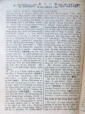
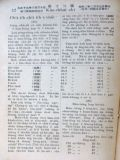
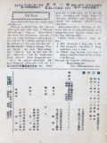
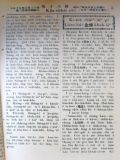

Languages
台文
｜
中文
｜
日本語
｜
English
字體
小
｜
中
｜
大
首頁
/
白話字數位典藏
白話字數位典藏全文檢索
查詢模式
選擇年代
清國時代(1885-1895)
日本時代(1895-1945)
戰後(1945-1969)
1885-1895
1896-1905
1906-1915
1916-1925
1926-1935
1936-1945
1946-1955
1956-1965
1966-1969
1970-1980
1980-1990
1990-2000
2000-2010
2010-
選擇文類
詩
散文
小說
戲劇
傳記
選擇作者
陳清忠
陳清義
編輯部
柯設偕
吳天命
明有德
偕叡廉
周天來
劉華義
王守勇
林茂生
陳添旺
王占魁
柯維思
賴仁聲
陳瓊琚
雪峰逸嵐
吳清鎰
郭水龍
蕭樂善
許水露
葉金木
陳金然
章王由
廖得
鄭連坤
潘道榮
楊士養
梁秀德
劉約翰
周淑慧
高金聲
林燕臣
黃六點
蔡愛義
許有才
主筆
巴克禮
陳鳩水
郭朝成
張基全
陳明清
陳能通
拾穗生
顏振聲
卓恆利
傳道局
胡文池
劉主安
鄭兒玉
Google Search
Yahoo Search
全部
刊名
標題
標題(教羅)
全文
全文(教羅)
作者
第23頁，共41頁(共813筆資料) 0.70209503173828sec
1
...
21
22
23
24
25
...
41
To Page
GO
文字列表
圖文列表
排序
日期
文類
刊名
作者
影像

[1927-2 芥菜子 文類-散文 作者-陳清忠/Tân Chheng-tiong ]
(3)
基督的無聊「孤單」 [ Ki-tok ê bô-liâu [ko͘-toaⁿ] ]
基督的無聊「孤單」 孤單有兩款：一款是為著家己的歹，致到予朋友無愛來，sak--伊的孤單；閣一款是為著想高尚，想好，平常的人oh得了解的因端，致到來無朋友的孤單。基督的孤單就是屬佇路尾這款。 天物的主，現時佇爸的厝，予千千萬萬的天使聖徒圍teh，無親像伊佇地裡的時的孤單。會了解伊的心肝，會知捌伊的精神，佮伊相佮講話，佮伊相佮歡喜，彼款的神靈拍算袂少。總是oa̍t頭看落來世間的時，記得伊做人的奴僕，予人拍，予人phuì涎的時，敢毋是猶原真孤單，真無聊mah！ 伊的目睭若看到圖利的巴黎、不信的北京的時，伊的心肝敢會得著慰安mah！人口幾若百萬的大都市；有拜堂、有說教，總是彼中間到底有幾个真...
[1927-2 芥菜子 文類-散文 作者-陳清忠/Tân Chheng-tiong ]
(2)
「Hiat 你的米糧佇水裡」！ [ “Hiat lí ê bí-niû tī chuí-ni̍h”! ]
「Hiat 你的米糧佇水裡」！ 「Hiat你的米糧佇水裡，濟濟日了後你欲閣得著」。這句是希伯來出名的哲學者所講的話。這句的意思，Ná想是ná深，伊的教示是真大。Hiat你的米糧佇水裡！人毋通想報仇，著hiat你的活命的米糧！人kiám-chhái欲講是拍損，你本身kiám-chhái也欲想是無效的所做。總是著毋通惜來hiat 你的米糧佇無人看見池內的水面，按呢就你佇濟濟日了後欲閣揣出！ 愛是啥物？愛是無向望欲對人得著報仇，歡喜來做的親切。世上有濟濟彼款的人將少少予人，就隨時欲要求人的答禮，向望人用加倍還--伊。實在in 的心肝真劣等！ 彼款的人是kan-ta掠對人得著物來做福氣。真...
[1927-2 芥菜子 文類-散文 作者-陳清忠/Tân Chheng-tiong ]
(2)
桌上談 [ Toh-siōng-tâm ]
桌上談 (續接前號)。 (IV) 宗教 有人問講，所有的宗教，佇苦勸人做好彼層事，敢毋是差不多攏相同 mah？」伊應講。「是，總是有大差別。別的宗教教示人講「照恁所會來行好，後來恁就成做好人。」基督教是教示弄人講，「著成做好人，彼時恁就會行好。」心肝的變化是著代先才著。」 學者問講，「論佛陀你想怎樣？」應講，「伊毋是神秘的人，是kan-ta一个道德tek的先生nā-tiāⁿ。因為佇伊的教示的中間，全然無論神的事。這款的人論神的事反轉是傷奇怪。伊所教示--的，就是盤涅抑是絕滅要求的事。總是拯救毋是要求的絕滅，是要求滿足。 治療喙焦得當的方法，毋是予伊死，著予伊lim夠額。」 ...

[1927-2 芥菜子 文類-散文 作者-陳清忠/Tân Chheng-tiong ]
(2)
一滴一滴的水 [ Chi̍t tih chi̍t tih ê chuí ]
一滴一滴的水 (24) 人一日所suh空氣的份量佮肺的闊。 咱平常teh喘氣，逐擺suh入sûn出空氣的份量，約略是2合。一暝一日肺所喘入歕出空氣的量大概是50石。若將遮个空氣入佇4 斗的酒桶，就會入得百外桶的額。 Suh遮爾濟空氣的肺，伊的面積也是真大。肺是對至細的肺的氣胞集合來成--的，伊的闊若用坪數來比較，差不多是25 坪的闊。 實在無有一項物比人的身軀較奧妙。對按呢通知上帝的智識到佗位！ (25) 長命國佮短命國。 人愛長歲壽，這是人的情。所以若愛長歲壽的人，較好著去長歲壽的國。若是按呢長歲壽的國是佇佗位？若看下面的統計表就會知：－ suī-...
[1927-3 芥菜子 文類-散文 作者-陳清忠/Tân Chheng-tiong ]
(3)
內面的生活 [ Lāi-bīn ê Seng-oa̍h ]
內面的生活 「上帝的國是佇恁的中間」。主有按呢講，獻你的全心予主，放sak這个罪惡的世間，就你的靈魂欲得著平安。 著學看輕外界的事物，也留心佇內界的事情，就恁會得曉悟上帝的國臨到佇恁(的中間)。 「因為上帝的國是和平，是對聖神來歡喜」。無清氣的人袂得通享受。 你若是備辦tú好的王位佇你的心內，基督就欲來揣你。也欲將伊的慰安賞賜--你。 所有伊的媠佮榮光攏是對心內發出，佇遐伊teh欲歡喜快樂。 靈tek 的人基督常常來訪問；若來逐擺有帶歡喜的話，快樂的慰安，滿滿的平和，尚且帶真通驚惶的友情來。 Ah篤信的靈魂，ah著備辦你的心肝來予這个新囝婿，伊穩當欲來揣--你，欲來踮佇你的內面...
[1927-4 芥菜子 文類-散文 作者-陳清忠/Tân Chheng-tiong ]
(2)
特別的青年 [ Te̍k-pia̍t ē chheng-liân ]
特別的青年 路加2章。41-51節。 讀這10節的聖經，會發見一个特別的青年出來，kiám-chhái有人 teh奇怪講，青年就是青年，thài有一个特別的？實在有。 人出世佇這个世間，若無拄著夭壽，卻逐个會經過一擺偕叡廉的時期，佇彼个時期無攏相同，有的較有智慧，有的較戇，有的較gâu，有的較頇慢，總是遐的較出tioh 的人物，佇青年的時期，有顯出較特別的款，有的特別較gâu講話，有的特別較gâu想，有的特別gâu寫字，有的特別gâu辦事。遮个通講是平常青年的特別，袂得通講是，對古早以來，未捌有的青年，特別今愛求對古早以來，未捌有的青年特別者，有彼个人無？有，彼个是啥物人。耶穌，耶穌怎樣...
[1927-4 芥菜子 文類-散文 作者-陳清忠/Tân Chheng-tiong ]
(2)
一滴一滴的水 [ Chi̍t tih chi̍t ti̍h ê chuí ]
「一滴一滴的水」 (26) 靈魂佮感情的重量 A、靈魂的重： 美國有一个博士名叫Má Lō͘-ka。伊佇幾若年前有真斟酌研究論人的靈魂的重，也發表講伊有用真精密的法度檢定靈魂的重約略有6 錢外。 伊將一个真傷重teh欲死的肺病患者，參伊的眠床 hē佇真精密的天秤的頂面，也徛teh注目斟酌共伊檢查伊的體量。彼个患者，為著伊的呼吸中的濕氣佮h發汗的因端，每時間有減伊的重約略8錢。 過 3點閣40分彼个患者的靈魂走出伊的身軀，死去，tú-tú 過氣的時陣天秤忽然一時閣減 6錢外。這个6錢外，Má Lō͘-ka斷定就是靈魂的重量。 Tāi-liân博士是美國人，伊有予一个查埔人坐佇椅裡...
[1927-8 芥菜子 文類-散文 作者-陳清忠/Tân Chheng-tiong ]
(6)
五旬節前的聖神佮以後的聖神 [ Gō͘-sûn-choeh chêng ê Sèng-sîn kap Í-āu ê Sèng-sîn ]
五旬節前的聖神佮以後的聖神 無論甚物時代，無論甚物所在，聖神無有兩个，是kan-ta一个nā-tiāⁿ。 總是若讀聖經咱就會知。五旬節前的聖神佮五旬節後的聖神有各樣，宛然ná 別物的各樣，伊的實質(實質)請這邊，若論伊的活動，伊的氣力實在有天地雲泥(天地雲泥) 的差。主講「人若嘴乾著就近我啉，信我的人，teh欲照聖經所講，成做活的水泉，對內面直直chhèng出--來」。這句話是指起信伊的人所欲得著的聖神，總是主袂受榮光，所以聖神袂降臨」。 佇舊約書中，無論佇甚物所在，通看見聖神的活動，主落世間以後閣較是按呢。若是按呢啥事講「聖神猶未臨到？」這不過是指舊約時代的聖神，若佮五旬節的...
[1927-10 芥菜子 文類-散文 作者-陳清忠/Tân Chheng-tiong ]
(4)
兒童中心的基督教 [ JÎ-TÔNG TIONG-SIM Ê KI-TOK-KÀU ]
兒童中心的基督教 TIÂN CHHOAN TI̍T-SIN 著 陳清忠 譯 第一章 「基督教的精神」 oa̍t-Joē-le̍k (G.F. Watts)是英國出名的畫工，伊佇1904年7月過身，享壽87歲。伊有流濟濟的宗教畫 (圖)佇後世，人若看伊的圖就會明白，知伊m̄-nā是富有佇預言tek (預言的)精神的人閣再是有創造tek(創造的)才能(才能) 的畫工。中間伊所第一貢獻佇萬國的基督徒的名畫就是彼張基督教的「精神」-基督坐佇雲頂，伊的腳頭u的有四個赤體的細漢囡仔佇teh，基督倒手比心肝，正手比chiah的細囝。 若講基督教的精神，萬人的確teh欲異口同音來叫講...
[1927-11 芥菜子 文類-散文 作者-陳清忠/Tân Chheng-tiong ]
(4)
兒童中心的基督教 [ Jî-tông Tiong-sim ê Ki-tok-kàu ]
兒童中心的基督教 (續接前號) 第三章 全能的上帝疼極端 (過頭)。 拍算，予近代的讀書界鬧熱的書籍(冊)，無有一本贏過Pa-pí-nî所著的 「基督傳。」連日本to有兩款的翻譯書。總是用研究的精神來讀一本傳記的人有幾個？拍算彼个數是真少。人人有各樣的趣味，無論teh讀甚物冊，若是有深深合佇家己的趣味--的，就特別較注意，這是自然的理。今仔日的牧師傳道師(台灣？)對佇兒童這方面無甚物有趣味的款，所以研究兒童的精神有缺乏。今仔日的傳教師的冊櫥內內，tàu-tih毋知有幾本關係兒童的冊佇teh？ 幾若年前，我捌佇某出名牧師的讀冊廳借過一暝，隔日透早起來，冊櫥內幾若百本的中間，揣無半本關...

[1927-11 芥菜子 文類-散文 作者-陳清忠/Tân Chheng-tiong ]
(1)
報料 [ Pò-liāu ]
報料 芥菜子列位的讀者siu-lám：- 本報有決定對mā年正月起欲佮「台灣教會報」合印。芥菜子毋是欲廢刊，本報的特色以及內容的充實，無各樣佇以前，不過是換來chham佇「台灣教會報」內面nā-tiāⁿ。就是將「北部事務」換做「芥菜子。」頁數欲加添到20面。目的是欲予讀者較便利，較經濟的。 所以對mā年正月起發行所(北部)欲換佇淡水龍目井街書房嚴漳先生遐。屬北部的讀者，若愛繼續買，直接對嚴先生注文就-好；屬南部--的，請對南部冊房注文。 芥菜子的報料，愛勞煩列位佇本月中(抑是上慢到後月上旬)來la̍p清楚。 請照下面所定來la̍p：- 1. Boé...

[1927-5 芥菜子 文類-散文 作者-陳清忠/Tân Chheng-tiong ]
(3)
基督怎樣比念佛較贏？ [ Ki-tok cháiⁿ-iūⁿ pí Liām-hu̍t 念佛 khah-iâⁿ? ]
基督怎樣比念佛較贏？ 日本基督教會有一个牧師名叫Ku-kok (亀谷)。伊是本源寺的教祖蓮如上人的地18 代孫。伊對細漢到大學卒業，拍算欲承接祖先的職，來做和尚，伊的卒業論文也是關係佇彼方面的研究，-就是研究念佛信仰的大乘者善導大師的 su。總是真奇怪，伊受恩典的手的揀召，斷然脫出和尚的職來做牧師；雖然有受內外的迫害真傷重，iáu-kú無離開伊的本所在，專心佇遐宣傳基督的道理。 伊所發行的雜誌「十字架」有一chām teh論頂面的問題；人若teh袂了解基督教佮佛教的優劣（iu-loat），讀這chām 會通做真好的參考。 伊按呢講： 「念佛是通感謝，這是釋迦的教示；七高僧有信念佛；C...
[1927-5 芥菜子 文類-散文 作者-陳清忠/Tân Chheng-tiong ]
(2)
一滴一滴的水 [ Chi̍t-tih chi̍t-tih ē chuí ]
「一滴一滴的水」 (30) Ba-khu-the-lī-á (細菌) 的大。通動植物界第一細的敢是Ba-khu-the-lī-á。Tauh-tí是loā細？大概是1分的 3000份一(1/3000分)伊的重每粒是0.00000000000041錢。 總是伊的生湠的力是非常，48點鐘後就到440錢重。 細菌的害，大部分是做傳染病的原un佮做肉類以及其他的植物腐敗的 原un。 A. 手佮細菌： 若用500抑是600倍的顯微鏡來看，無論甚物人的手to有濟少的細菌khîⁿ-teh。較濟人是想若sái洗手就會lut，若是實在無hiah快，也袂死。有一款細菌就用蒸餾水抑是純全的酒精來洗，袂l...
[1927-6 芥菜子 文類-散文 作者-陳清忠/Tân Chheng-tiong ]
(3)
真的工程 [ Chin ê Kang-tiâⁿ ]
真的工程 傳道者Ko-lân。(Conant)佇「個人傳道」雜誌的內面，有講起，幾若年前，有一个女宣教師，寫一篇chhiam-hoé 的文，落佇「世界宣道論評」的事。 彼个女宣教師按呢講：- 「我捌鼓舞一个大的集會，也我有滿滿的熱心，愛予這个會得著大的成功。開會彼日，我的老爸，做委員來欲出席，佮我坐佇旅館的食堂長。伊用共鳴的心，聽我說明，這个會的特色以及將來欲得著的盛況。我歇睏teh喘氣的時，我的老爸àⁿ伊的身軀近倚我，目睭看佇這个phâng菜的人，共我講。查某囝，我想佇遐彼个大漢給仕káⁿ會接納耶穌基督。我捌常常佮伊談論，論伊的靈魂的事」。 我為著計畫這个大的集會，我的無閒差不多親...
[1927-6 芥菜子 文類-散文 作者-陳清忠/Tân Chheng-tiong ]
(2)
一滴一滴的水 [ Chi̍t tih chi̍t tih ê Chuí ]
「一滴一滴的水」 (31) 一百二十歲的長壽法。 某出名的博士，研究人日常的生活佮歲壽的關係，發表講，人若向望愛食到一百二十歲，著嚴守下面所排這幾項，就會達目的：- 1、喘氣著對鼻空。 2、睏的時窗仔門著攏開。 3、逐日bín兩擺喙齒。 4、毋通lim傷濟、食傷濟。 5、逐日著洗浴。 6、每日著例行運動。 7、逐日著兩擺腹肚枵。 8、社務毋通帶轉來厝裡辦。 9、著笑著求好笑的事。 10、無論做啥物事，毋通過頭。 11、對生活著想爽快。毋通貧惰。 12、薰，就毋通食。 13、日常倚著跤手、身邊的物著顧清氣相。 14、衫著照厝內、厝外，應時候來穿。...
[1927-7 芥菜子 文類-散文 作者-陳清忠/Tân Chheng-tiong ]
(2)
世界第一 [ Sè-kài tē-it ]
世界第一 1、世界第一大的樹： 世界植物的種類約有175000種。從中第一大的，就是俄羅斯的Kun-su-tan-teng附近彼叢「Phian tree」。樹身的懸是100 尺，周圍是165 尺：若共伊liâu做兩爿，就每爿會 chhu得「塌塌米」 100 thia̍p。有人teh講，捌一擺有18人佇彼叢的樹khak內開宴會，iáu-kú所在有chhun不止闊。按呢咱就通知伊的大。 第二大的是佇美國。第二大的佇遮毋免講。 2、世界第一懸的樹： 世界第一懸的樹就是豪洲的「尤加利」樹。這款的樹本國也不止有teh栽培，總是氣候風土的精差，袂得通發到偌大；但是伊的原產地，有的約有500 尺...
[1928-1 台灣教會報 文類-詩 作者-周天來/Chiu Thian-lâi]
請來吟詩 [ Chhiáⁿ lâi gîm si ]
請來吟詩 周天來 1928.01.01 514卷p.3 請大家來吟一首新詩!這首詩，是佮聖詩117首的音韻，句調不止sio像--ê；有參考聖詩幾若首來做--ê；總是大部分是參考日本的讚美歌212首來做；因為字數攏sio像，所以無論是用讚美歌的調，抑是聖詩的調；拍算攏真好聽。咱的聖詩是將廈門音做標準，佮北部的腔口共款；所以下底所記這首詩猶原將這个做標準；請若欲吟，隨人通用家己的腔口。若愛知這首詩的原由佮目的抑是信仰上淡薄的故事，請看教會新報，新年號：「我主至好朋友，」彼篇所記--ê。若有人憂愁，煩惱家己的罪，啼哭，失望，無平安的人，請無棄嫌來吟看bāi。 Taⁿ，請大家來吟：－...
[1928-1 台灣教會報 文類-散文 作者-周天來/Chiu Thian-lâi]
基督教會佮實踐道德使命 [ Ki-tok Kàu-hoē kap Sit-chián Tō-tek Sú-bēng ]
現代的基督教會佮實踐道德的使命 周天來 1928.01.01 514卷p.8-9 基督教是疼的宗教，也是實行的宗教。若無基督，自然基督教是無存在：sio-siāng按呢，若無基督的精神，就基督教是袂存屬。教會是基督建設--ê，是上帝國的中心。 有人講，耶穌的教示佮使徒彼个，全然無siāng款；總是這个決斷毋是放拺上帝國的觀念：因為in是宣傳上帝國的中心，基督佮十字架；所以將上帝國換做彼个建設者，就是基督佮伊的十字架nā-tiāⁿ。又閣使徒的批有將「上帝國」這句，換做「教會。」「上帝國」這句，保羅的批信有記10外擺，其他別位攏是真少：總是「教會」這句，使徒行傳以下有記100擺以上，...
[1928-2 台灣教會報 文類-散文 作者-周天來/Chiu Thian-lâi]
現代基督教會佮實踐道德使命 [ Hiān-tāi Ki-tok Kàu-hoē kap Si̍t-chián Tō-tek Sú-bēng ]
現代的基督教會佮實踐道德的使命 周天來 1928.02.01 515卷p.8-10 Taⁿ照頂面所講通知，上帝國的思想真有氣力；就通了解基督教著愛佮社會一般的思想，事業佮運動不止有關係，才會用得。基督教的思想著愛應用佇現代的思想，著會指導伊，才會發揮彼个根本就是道德思想；亦道德思想就是新約聖冊的思想。 有人講，新約聖冊的思想是干焦教示個人的道德nā-tiāⁿ；總是決斷毋是按呢，也有教示社會的道德佇teh。因為道德的中心點，就是人對別人的關係的中間才會出現；又閣這个事實亦是社會問題中心點。 新約聖冊常常用人對上帝的關係來受的時，將人對「厝邊」的關係，這款的話來表明。新約聖冊有...
[1928-4 台灣教會報 文類-小說 作者-周天來/Chiu Thian-lâi]
故事 [ Kò͘-sū ]
故事 心心，念念 周天來 1928.04.01 517卷p.8-10 (這篇無論大人，囡仔來看攏會明)。 捌有一擺佇某所在，有一個女學學生佮伊一个小弟，兩个相chhoā出門；坐火車去到屏東的所在揣伊的窗友thit-thô。彼日in到屏東拄拄3點半，也彼个學生的窗友有來到車頭等接in；大家見面真歡喜，相佮講話；就chhoā in到伊的厝。彼暗就辦腥臊請in。食飽了停霎仔久，in就出去門口埕歇睏；有時坐--teh，有時起來；行來行去，講東講西講真久，是因為太久罕得相拄；又閣歇熱的時間已經欲過，大家相揣坐；險險就無通相探的機會，所以大家談話真濟；到真暗才無閣hoē；大家歡喜到極，...
第23頁，共41頁(共813筆資料)
1
...
21
22
23
24
25
...
41
To Page
GO
數位典藏國家型科技計劃
拓展台灣數位典藏計畫
版權所有 國立台灣師範大學 台灣文化及語言文學研究所©2008
10610 台北市和平東路一段162號│TEL 02-7734-5516│Fax 02-2358-2461
計劃簡介
典藏特色
執行架構
計畫典藏數位化流程
成員介紹
台灣白話字發展簡介
巴克禮牧師與《台灣教會公報》
廈門話字典-杜嘉德
白話字教學-打馬字
中國南方白話字發展
台灣基督教長老教會簡表
台灣基督教長老教會教會歷史委員會
《北部台灣基督長老教會教會ê歷史》
關於陳清忠
白話字文學：台灣文學的早春